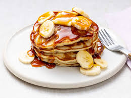

Banana Pancakes

Wake up right with this classic breakfast!
Nothing fancy about this recipe, it's all in the name.This breakfast is tried and true!
Ingredient
- Flour
- Sugar
- Baking powder
- Salt
- One egg
- Milk
- Vegetable oil
- Bananas
Cooking Instructions
- Combine your dry ingredients (flour, sugar, salt, baking powder) in one bowl and your wet ingredients (egg, milk, vegetable oil, mashed bananas) in another bowl. Add the dry ingredients to the bowl with the wet ingredients, then stir until they're incorporated. It's OK if your batter is slightly lumpy.
- Pour the batter in ¼ cup portions onto a lightly oiled pan or griddle over medium-high heat. Cook for a few minutes, flip with a spatula, and cook for another few minutes (or until each side is golden brown).
- Serve your banana pancakes immediately. They're delicious alone or with your favorite pancake toppings.